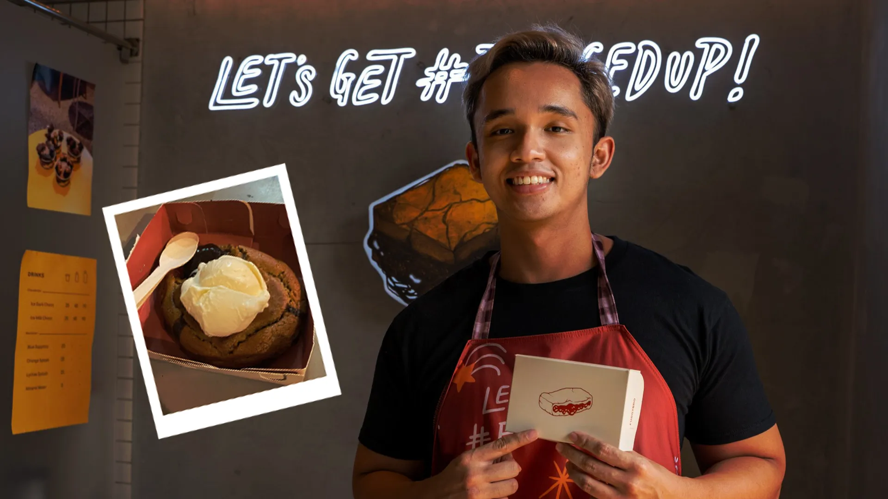
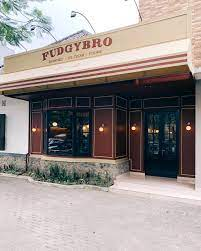

About Fudgy
Fudgybro adalah sebuah brand yang menjual kue cokelat fudgy yang lezat.
Didirikan oleh Rayendra Abiyasa pada tahun 2018, di Jakarta. Fudgybro berkomitmen untuk
memberikan pengalaman kuliner yang tak terlupakan dengan kue cokelat yang begitu nikmat.
Sejak kecil Rayendra memang memiliki kegemaran untuk memasak dan mencoba hal-hal baru.
Di mana semua skill-skill masaknya dia pelajari melalui YouTube. Rayendra mengungkapkan juga hadirnya Fudgy Bro juga ada didasari dengan kegemarannya yaitu makan.
Mulanya ia hanya memakan dan saat Rayendra menjalankan diet, ia mulai mengeksplorasi dunia permasakan
melalui media sosial. Motivasi dibaliknya tentu saja untuk menambahkan variasi brownies yang beraneka ragam,
jadi bukan hanya sekedar brownies kering dan lumer, melainkan juga ada brownies yang fudgy.
Fudgy Bro awalnya dibangun dengan menggunakan modal sekitar 10 sampai 20 juta, tetapi semua keuntungan kemudian diputar kembali untuk menghasilkan lebih banyak.
Di sisi lain Rayendra merasa bersyukur karena dirinya diberi kemudahan, seperti untuk dapur dan segala macam kebutuhannya dipinjamkan oleh keluarga. Walaupun diberikan kemudahan,
Namun saat menjalankan bisnis setiap orang juga mengalami kesulitan begitu juga dengan Rayendra. Dalam kasus Fudgybro, mereka masalah yang dihadapi yaitu pada saat membangun bisnis
pertama kali, mulai dari operasionalnya, cara mendesain toko, dapur, cara yang tepat dalam memasarkan bisnis, dan menentukan lokasi yang tepat dalam membuka toko pertama.

Bermula dari dapur rumahan hasil pinjaman keluarga, Fudgy Bro sekarang ini sudah memiliki dua dapur yang berlokasikan di Surabaya dan Jakarta.
Bukan hanya itu, pencapaian terbesar Fudgybro adalah dengan membuat dan menemukan resep dari menu viralnya yaitu cookie bom. Dimana cookie bom ini terinspirasi dari salah satu cookies
dari Singapura yang dikenal dengan nama cookie lava. Nama Cookie Bomb di dapatkan dari plesetan film “Oppenheimer”, dimana film ini banyak menggunakan elemen ledakan 🍪.